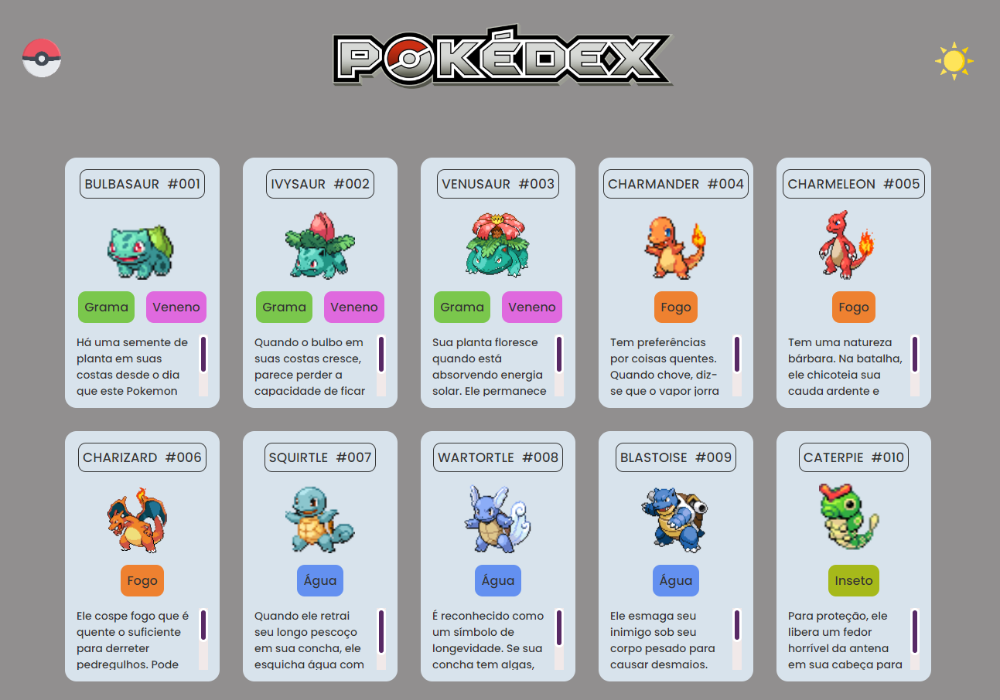
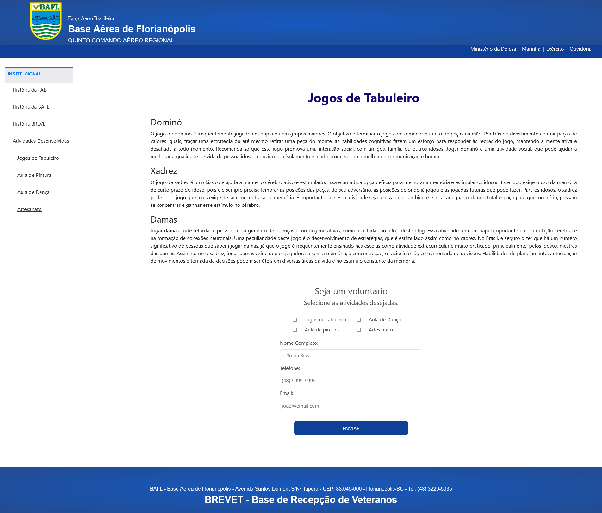
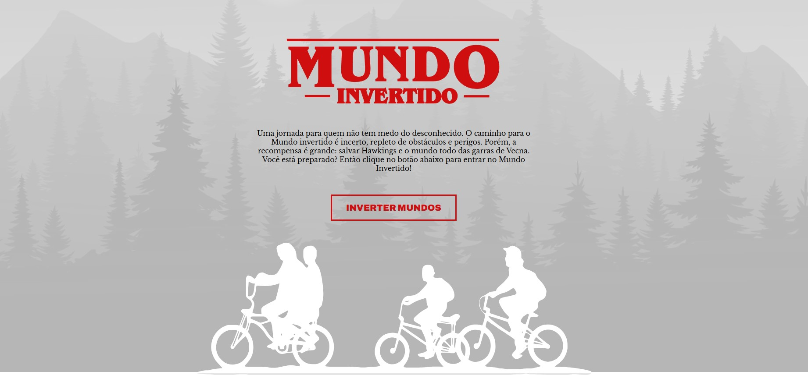
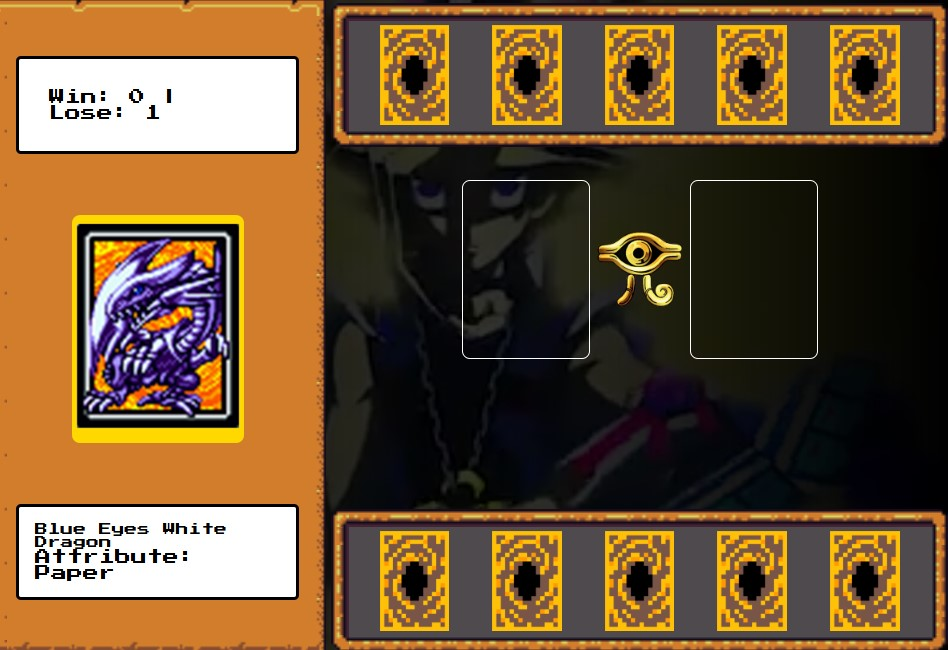

Portfólio
✦ Página listagem pokemon desenvolvida durante a Semana do Zero ao Programador Contratado realizada pelo Dev em DOBRO.
Tecnologias utilizadas: HTML, CSS e Javascript.
✦ Modelo de site desenvolvido para a Base de Recepção de Veteranos da Base Aérea de Florianópolis.
Tecnologias utilizadas: HTML, CSS, Bootstrap e Javascript.
✦ Landing Page - Mundo Invertido desenvolvido durante Bootcamp RiHappy - DIO.
Tecnologias utilizadas: HTML, CSS, e Javascript.
✦ Piano virtual desenvolvido durante Bootcamp RiHappy - DIO.
Tecnologias utilizadas: HTML, CSS, e Javascript.

✦ Yu-Gi-Oh game desenvolvido durante Bootcamp RiHappy - DIO.
Tecnologias utilizadas: HTML, CSS, e Javascript.
